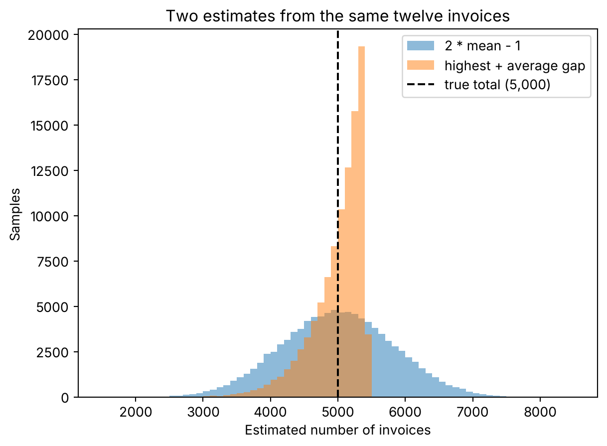

import numpy as np
import matplotlib.pyplot as pltTwelve invoice numbers are enough to estimate how many orders your competitor has
sampling
probability
simulation
python
If invoices are numbered in order, a dozen of them tell you the total. Take the highest number you’ve seen and add the average gap between the ones you hold. With simulation.
A competitor has sent you twelve invoices this year. They’re numbered in order, and the highest number you’ve seen is 4,812. So they’ve issued at least 4,812 invoices, and you can do much better than “at least”.
The answer is about 5,212. You get there with one division and one addition.
I need two things to hold. The numbering starts at 1 and skips nothing. And the twelve invoices you got are a random handful of all the ones they issued. I’ll come back to both at the end.
The highest number falls short
Your first guess is the highest number itself. It can’t be too high, which is nice. It’s almost always too low.
To see by how much, I make up a competitor with exactly 5,000 invoices. Then I hand out twelve of them at random, 100,000 times over.
I draw twelve different numbers between 1 and 5,000, 100,000 times. Floyd’s algorithm does it for every row at once.
np.random.seed(2026)
N, k, n_samples = 5000, 12, 100_000
# Floyd's algorithm, vectorised across rows: k draws without replacement from 1..N
samples = np.empty((n_samples, k), dtype=np.int64)
for i, j in enumerate(range(N - k + 1, N + 1)):
t = np.random.randint(1, j + 1, size=n_samples)
dup = (samples[:, :i] == t[:, None]).any(axis=1)
samples[:, i] = np.where(dup, j, t)A quick check that every row holds twelve different numbers in range.
repeats = (np.diff(np.sort(samples, axis=1), axis=1) == 0).any(axis=1).sum()
print(samples.shape, samples.min(), samples.max())
print(f"rows with repeats: {repeats}")(100000, 12) 1 5000
rows with repeats: 0A hundred thousand rows of twelve invoice numbers, none repeated within a row. Now the highest of each row.
m = samples.max(axis=1)
print(f"mean of the highest: {m.mean():.1f}")
print(f"share where it is < N: {(m < N).mean():.4f}")
print(f"share where it is == N: {(m == N).mean():.4f}")mean of the highest: 4615.6
share where it is < N: 0.9975
share where it is == N: 0.0025The highest number averages 4,616. It falls short of 5,000 in 99.8% of the rows. To hit the total exactly, you’d need the very last invoice to be one of your twelve.
Last week the highest of ten estimates came out too high. This one comes out too low. Those were noisy guesses scattered around the truth. These are numbers with a ceiling, and a sample can only touch the ceiling from below.
So the highest number needs a push upwards. The question is how big.
The gaps tell you how much to add
Sort your twelve numbers. They cut the series into thirteen gaps, runs of invoices you never saw: one before your lowest, eleven in between, and one after your highest.
That last gap is what you’re after. It’s the distance from your highest number to the real total.
You can’t see it. But nothing makes it special. The twelve numbers landed at random, so on average the thirteen gaps are all the same size.
And you can measure the other twelve. Below your highest number \(m\) there are \(m - k\) invoices you didn’t get, where \(k\) is how many you did. They’re spread over \(k\) gaps. The average gap is \((m - k)/k\).
Add one average gap to the highest number you’ve seen.
\[\hat N = m + \frac{m - k}{k}\]
With your invoices: below 4,812 there are 4,800 numbers you haven’t seen. Split over twelve gaps, that’s 400 per gap. And \(4{,}812 + 400 = 5{,}212\).
You’ll usually see the formula written as \(m(1 + 1/k) - 1\). It’s the same thing with the terms shuffled.
The simulation can check the step I asked you to take on faith. For every row I compute the average gap you can see and the gap above the highest number, which you can’t.
gap_seen = (m - k) / k
gap_above = N - m
print(f"mean gap you can see: {gap_seen.mean():.1f}")
print(f"mean gap above the highest: {gap_above.mean():.1f}")mean gap you can see: 383.6
mean gap above the highest: 384.4383.6 and 384.4. The gap you can measure is a fair stand-in for the one you can’t.
Now the estimate itself.
n_hat = m + gap_seen
print(f"mean: {n_hat.mean():.1f}")
print(f"sd: {n_hat.std():.1f}")mean: 4999.3
sd: 384.5It averages 4,999 against a true 5,000. The standard deviation is 385, under 8% of the total. From twelve invoices.
Doubling the average also works, and it’s worse
There’s another estimate that probably occurred to you first. If the numbers run from 1 to \(N\), their average sits in the middle. So double the average of your twelve and subtract one.
twice = 2 * samples.mean(axis=1) - 1
print(f"mean: {twice.mean():.1f}")
print(f"sd: {twice.std():.1f}")mean: 4997.4
sd: 832.5It’s also right on average: 4,997. But its standard deviation is 832, more than twice the other one.
bins = np.linspace(1500, 8500, 71)
fig, ax = plt.subplots()
ax.hist(twice, bins=bins, alpha=0.5, label="2 * mean - 1")
ax.hist(n_hat, bins=bins, alpha=0.5, label="highest + average gap")
ax.axvline(N, color="black", linestyle="--", label="true total (5,000)")
ax.set_xlabel("Estimated number of invoices")
ax.set_ylabel("Samples")
ax.set_title("Two estimates from the same twelve invoices")
ax.legend()
plt.show()
The doubled average is a wide bell around 5,000. The other one is a narrow spike that stops dead on the right.
I count how often each lands within 10% of the truth.
lo, hi = 0.9 * N, 1.1 * N
print(f"highest + gap within 10%: {((n_hat >= lo) & (n_hat <= hi)).mean():.3f}")
print(f"2 * mean - 1 within 10%: {((twice >= lo) & (twice <= hi)).mean():.3f}")
print("highest + gap, percentiles 2.5 and 97.5:", np.percentile(n_hat, [2.5, 97.5]).round(0))highest + gap within 10%: 0.892
2 * mean - 1 within 10%: 0.449
highest + gap, percentiles 2.5 and 97.5: [3992. 5405.]89% against 45%.
The percentiles show how lopsided the good estimate is. It can fall a thousand short when your twelve invoices all happen to be early ones. It never overshoots by much, because the highest number can’t pass 5,000 and you only add a twelfth on top.
The doubled average has an uglier problem.
print(f"share of impossible estimates: {(twice < m).mean():.3f}")share of impossible estimates: 0.304In 30% of the rows it gives a total lower than the highest invoice in that same row. It tells you they’ve issued 4,300 invoices while you’re holding number 4,700.
Look at what each estimate uses.
Once you know the highest number, the other eleven are just random numbers below it. They’d look the same if the total were 5,000 or 50,000. They carry nothing about the total that the highest number doesn’t already have.
The average gap doesn’t need them either: \((m - k)/k\) takes only \(m\) and \(k\).
The doubled average lets all twelve pull on where the series ends. Eleven of them add nothing there but noise.
Everything the sample knows about the total is in its highest number and its size.
Statisticians call this the German tank problem, after the serial numbers on captured tanks. The estimate was already in use during the war. In 1952 Leo Goodman showed that, among the estimates that are right on average, this one has the smallest variance.
What changes for you
Sequential numbers are all over the place. Invoice numbers, order numbers in a confirmation email, user IDs in a URL, support ticket numbers. Each one is a sample from a series, and a dozen of them is enough to size it.
Check the two assumptions before you believe the number.
If the competitor restarts the count every January, you’ve estimated this year’s invoices. If their numbering skips, or starts at 10,000 to look bigger, the estimate inherits that.
If your twelve invoices all come from the spring, you’ve estimated how far they’d got by the spring.
And an invoice is an order only if they bill each order on its own.
There’s a version for a series whose first number you don’t know. I’ve left that out, along with how to put an upper bound on the total. Both need more than one addition.
Then look at your own numbers. Your order confirmations carry an ID, and your customers include people who work for the competition. If that ID goes up by one with every order, anyone with a dozen of your emails can run the same sum on you.
Reference
Goodman, L. A. (1952). “Serial number analysis”. Journal of the American Statistical Association 47(260), 622–634.